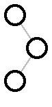
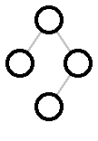
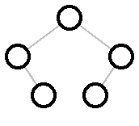
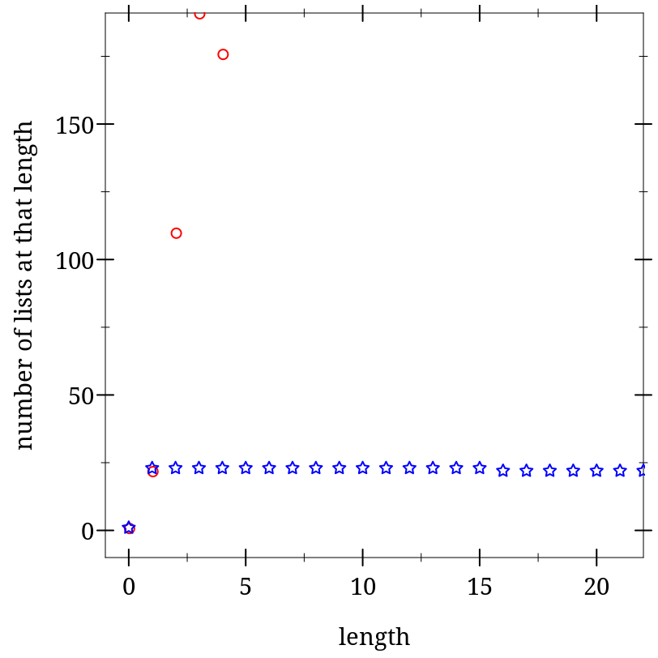
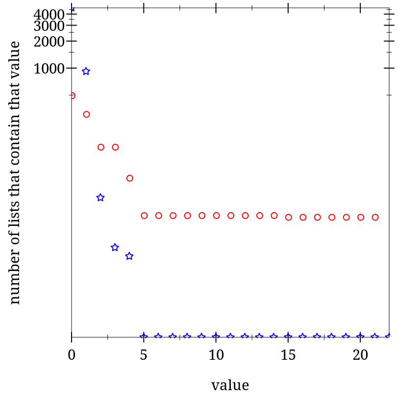

11 Enumerations
| (require data/enumerate/lib) | |
| package： data-enumerate-lib | |
This library defines enumerations. Enumerations are represented as bijections between the natural numbers (or a prefix of them) and the values of some contract. Most of the enumerations defined in this library guarantee that the constructed bijection is efficient, in the sense that decoding a number is roughly linear in the number of bits taken to represent the number.
> (from-nat (list/e natural/e natural/e natural/e) 0) '(0 0 0)
> (from-nat (list/e natural/e natural/e natural/e) 1) '(0 0 1)
> (from-nat (list/e natural/e natural/e natural/e) (expt 2 100)) '(10822639409 2238661967 110761420)
> (to-nat (list/e natural/e natural/e natural/e) (list 123456789 123456789 123456789)) 1881676417513891481838999
> (from-nat (or/e natural/e (list/e natural/e natural/e)) 0) 0
> (from-nat (or/e natural/e (list/e natural/e natural/e)) 1) '(0 0)
> (from-nat (or/e natural/e (list/e natural/e natural/e)) 2) 1
> (from-nat (or/e natural/e (list/e natural/e natural/e)) 3) '(0 1)
> (from-nat (or/e natural/e (list/e natural/e natural/e)) 4) 2
(define bt/e (delay/e (or/e (single/e #f) (list/e bt/e bt/e))))
> (from-nat bt/e 0) #f
> (from-nat bt/e 1) '(#f #f)
> (from-nat bt/e 2) '(#f (#f #f))
> (from-nat bt/e 3) '((#f #f) #f)
> (from-nat bt/e (expt 2 100))
'(((((((#f #f) #f) (#f (#f #f))) (((#f (#f #f)) (#f #f)) ((#f #f) #f)))
(((#f #f) (#f #f)) (#f ((#f #f) (#f (#f #f))))))
(((((#f #f) #f) (#f (#f #f))) (((#f (#f #f)) (#f #f)) ((#f #f) #f)))
(((#f #f) #f) (#f ((#f #f) (#f (#f #f)))))))
((((((#f #f) #f) (#f (#f #f))) (((#f (#f #f)) (#f #f)) ((#f #f) #f)))
(((#f #f) (#f #f)) (#f ((#f #f) (#f (#f #f))))))
(((((#f #f) #f) (#f (#f #f))) (((#f (#f #f)) (#f #f)) ((#f #f) #f)))
(((#f #f) #f) (#f ((#f #f) (#f (#f #f))))))))
(define ordered-pair/e (cons/de [hd natural/e] [tl (hd) (nat+/e (+ hd 1))]))
> (for/list ([i (in-range 10)]) (from-nat ordered-pair/e i))
'((0 . 1)
(0 . 2)
(1 . 2)
(1 . 3)
(0 . 3)
(1 . 4)
(2 . 3)
(2 . 4)
(2 . 5)
(0 . 4))
(define (swap-components x) (cons (cdr x) (car x))) (define other-ordered-pair/e (map/e swap-components swap-components ordered-pair/e #:contract (cons/c natural? natural?)))
> (for/list ([i (in-range 10)]) (from-nat other-ordered-pair/e i))
'((1 . 0)
(2 . 0)
(2 . 1)
(3 . 1)
(3 . 0)
(4 . 1)
(3 . 2)
(4 . 2)
(5 . 2)
(4 . 0))
> (map/e (λ (x) (floor (/ x 100))) (λ (x) (* x 100)) natural/e #:contract natural?) map/e: contract violation;
new enumeration would not be two-way
passing 299 to `from-nat` produces:
299
which, when passed through `in' and `out', produces:
200
which, when passed to `to-nat' produces 200,
but it should have been 299
in: (->i
((in
(e es c)
(cond
((null? es) (-> (enum-contract e) c))
(else
(dynamic->*
#:mandatory-domain-contracts
(map enum-contract ...)
#:range-contracts
(list c)))))
(out
(e es c)
(cond
((null? es) (-> c (enum-contract e)))
(else
(dynamic->*
#:mandatory-domain-contracts
(list c)
#:range-contracts
(map enum-contract ...)))))
(e enum?)
#:contract
(c contract?))
#:rest
(es (listof enum?))
#:pre/desc
(in out e es)
(appears-to-be-a-bijection?
in
out
(cons e es))
(result enum?))
contract from:
<pkgs>/data-enumerate-lib/data/enumerate.rkt
blaming: top-level
(assuming the contract is correct)
at: <pkgs>/data-enumerate-lib/data/enumerate.rkt:45.3
Sometimes, there is no easy way to make two functions that form a bijection. In that case you can use pam/e and supply only one function to make a one way enumeration. For example, we can make an enumeration of picts of binary trees like this:
(define pict-bt/e (pam/e (λ (bt) (binary-tidier (let loop ([bt bt]) (cond [(list? bt) (apply tree-layout (map loop bt))] [else #f])))) bt/e #:contract pict?))
> (from-nat pict-bt/e 10) 
> (from-nat pict-bt/e 11) 
> (from-nat pict-bt/e 12) 
Putting all these pieces together, here is a definition of an enumeration of closed expressions of the untyped lambda calculus.
(define/contract (lc-var/e bvs memo) (-> (set/c symbol?) (hash/c (set/c symbol?) enum?) enum?) ; memoization is a significant performance improvement (hash-ref! memo bvs (delay/e (or/e ; the variables currently in scope (apply fin/e (set->list bvs)) ; the λ case; first we build a dependent ; pair of a bound variable and a body expression ; and then use map/e to build the usual syntax (map/e (λ (pr) `(λ (,(car pr)) ,(cdr pr))) (λ (λ-exp) (cons (caadr λ-exp) (caddr λ-exp))) (cons/de [hd symbol/e] [tl (hd) (lc-var/e (set-add bvs hd) memo)]) #:contract (list/c 'λ (list/c symbol?) lc-exp?)) ; application expressions (list/e (lc-var/e bvs memo) (lc-var/e bvs memo)))))) (define (lc-exp? x) (match x [(? symbol?) #t] [`(λ (,x) ,e) (and (symbol? x) (lc-exp? e))] [`(,a ,b) (and (lc-exp? a) (lc-exp? b))])) (define lc/e (lc-var/e (set) (make-hash)))
> (from-nat lc/e 0) '(λ (a) a)
> (from-nat lc/e 1) '((λ (a) a) (λ (a) a))
> (from-nat lc/e 2) '(λ (a) (λ (a) a))
> (to-nat lc/e '(λ (f) ((λ (x) (f (x x))) (λ (x) (f (x x)))))) 65533604995627347825568080010
11.1 Core Enumeration
| (require data/enumerate) | package： data-enumerate-lib |
The data/enumerate library contains the core subset of the enumeration library; its exports are described in the sections Enumeration Properties, Querying Enumerations, and Constructing Enumerations.
There are more enumeration functions than just the core, provided by data/enumerate/lib.
11.2 Enumeration Properties
In addition to the functions that form the bijection, an enumeration also has a contract, a count, and three boolean properties associated with it: if it is finite or not, if it is a bijection to the natural numbers or merely maps from the natural numbers without going back, and if the contract it has is a flat-contract?.
The functions in this section are predicates for the boolean properties and selection functions for other properties.
When an enumeration prints out, it shows the first few elements of the enumeration and, if it is either a finite enumeration or a one way enumeration, it prints finite and one-way, as appropriate. If those prefixes are not printed, then the enumeration is not finite and is not one-way.
函数
(finite-enum? v) → boolean?
v : any/c
函数
(infinite-enum? v) → boolean?
v : any/c
函数
(two-way-enum? v) → boolean?
v : any/c
函数
(one-way-enum? v) → boolean?
v : any/c
函数
(flat-enum? v) → boolean?
v : any/c
函数
(enum-count e) → natural?
e : finite-enum?
函数
(enum-contract e) → natural?
e : finite-enum?
11.3 Querying Enumerations
The functions in this section exercise the enumeration, turning natural numbers back and forth to the values that an enumeration enumerates.
函数
(from-nat e n) → (enum-contract e)
e : enum?
n :
(if (finite-enum? e) (integer-in 0 (enum-count e)) natural?)
函数
(to-nat e x) →
(if (finite-enum? e) (integer-in 0 (enum-count e)) natural?) e : two-way-enum? x : (enum-contract e)
函数
(enum->list e [n]) → (listof (enum-contract e))
e : enum?
n :
(if (finite-enum? e) (integer-in 0 (enum-count e)) natural?) = (enum-count e)
If n is not supplied, then e must be a finite-enum.
> (enum->list (list/e natural/e natural/e) 8) '((0 0) (0 1) (1 0) (1 1) (0 2) (1 2) (2 0) (2 1))
> (enum->list (below/e 8)) '(0 1 2 3 4 5 6 7)
Note that enumerations are also sequences directly, too.
11.4 Constructing Enumerations
This section contains the fundamental operations for building enumerations.
函数
(below/e max) →
(and/c (if (= max +inf.0) finite-enum? infinite-enum?) two-way-enum? flat-enum?) max : (or/c natural? +inf.0)
> (enum->list (below/e 10)) '(0 1 2 3 4 5 6 7 8 9)
> (enum->list empty/e) '()
函数
f : (-> (enum-contract e) c) f-inv : (-> c (enum-contract e)) c : contract? e : enum? (map/e f f-inv #:contract c e ...+) → enum?
f :
(dynamic->* #:mandatory-domain-contracts (map enum-contract e) #:range-contracts (list c))
f-inv :
(dynamic->* #:mandatory-domain-contracts (list c) #:range-contracts (map enum-contract e)) c : contract? e : enum?
If multiple enumerations are supplied, f is expected to accept any combination of elements of the given enumerations, i. e., the enumerations are not processed in parallel like the lists in map, but instead any element from the first enumeration may appear as the first argument to f and any element from the second may appear as the second argument to f, etc.
If e is a one way enumeration, then the result is a one way enumeration and f-inv is ignored. Otherwise, the result is a two way enumeration.
> (define evens/e (map/e (λ (x) (* x 2)) (λ (x) (/ x 2)) natural/e #:contract (and/c natural? even?))) > (enum->list evens/e 10) '(0 2 4 6 8 10 12 14 16 18)
> (define odds/e (map/e add1 sub1 evens/e #:contract (and/c natural? odd?))) > (enum->list odds/e 10) '(1 3 5 7 9 11 13 15 17 19)
> (define ordered-pair/e (map/e (λ (x y) (cons x (+ x y))) (λ (p) (define x (car p)) (define y (cdr p)) (values x (- y x))) natural/e natural/e #:contract (and/c (cons/c natural? natural?) (λ (xy) (<= (car xy) (cdr xy)))))) > (enum->list ordered-pair/e 10)
'((0 . 0)
(0 . 1)
(1 . 1)
(1 . 2)
(0 . 2)
(1 . 3)
(2 . 2)
(2 . 3)
(2 . 4)
(0 . 3))
函数
(pam/e f #:contract c e ...+) → one-way-enum?
f :
(dynamic->* #:mandatory-domain-contracts (map enum-contract e) #:range-contracts (list c)) c : contract? e : enum?
> (define rationals/e (pam/e / (nat+/e 1) (nat+/e 2) #:contract (and/c exact? rational? positive?))) > (enum->list rationals/e 10) '(1/2 1/3 1 2/3 1/4 1/2 3/2 1 3/4 1/5)
函数
(except/e e [#:contract c] x ...) → two-way-enum?
e : two-way-enum? c : (or/c #f contract?) = #f x : (enum-contract e)
If c is #f, then it is not treated as a contract, instead the resulting contract is synthesized from contract on e and the xs.
> (define except-1/e (except/e natural/e 3)) > (from-nat except-1/e 2) 2
> (from-nat except-1/e 4) 5
> (to-nat except-1/e 2) 2
> (to-nat except-1/e 4) 3
If the enumerations have overlapping elements, then pass #t as one-way-enum? so the result is a one way enumeration.
In more detail, if all of the arguments have or are two way enumerations and one-way-enum? is #f, then the result is also a two way enumeration and each argument must come with a predicate to distinguish its elements from the elements of the other enumerations. If the argument is a pair, then the predicate in the second position of the pair is used. If the argument is an enumeration, then it must be a flat enumeration and the contract is used as its predicate.
If any of the arguments are one way enumerations (or one-way-enum? is not #f), then the result is a one way enumeration and any predicates in the arguments are ignored.
> (enum->list (or/e natural/e (list/e natural/e natural/e)) 10) '(0 (0 0) 1 (0 1) 2 (1 0) 3 (1 1) 4 (0 2))
函数
(append/e [ #:one-way-enum? one-way-enum?] e-p ...+) → enum? one-way-enum? : boolean? = #f e-p : (or/c enum? (cons/c enum? (-> any/c boolean?)))
Like or/e the resulting enumeration is either a one way enumeration or a two way enumeration depending on the status of the arguments, and append/e has the same constraints on overlapping elements in the arguments.
> (enum->list (append/e (take/e natural/e 4) (list/e natural/e natural/e)) 10) '(0 1 2 3 (0 0) (0 1) (1 0) (1 1) (0 2) (1 2))
函数
(thunk/e eth [ #:count count #:two-way-enum? is-two-way-enum? #:flat-enum? is-flat-enum?]) → enum?
eth :
(-> (and/c (if (= count +inf.0) infinite-enum? (and/c finite-enum? (let ([matching-count? (λ (e) (= (enum-count e) count))]) matching-count?))) (if is-two-way-enum? two-way-enum? one-way-enum?) (if is-flat-enum? flat-enum? (not/c flat-enum?)))) count : (or/c +inf.0 natural?) = +inf.0 is-two-way-enum? : any/c = #t is-flat-enum? : any/c = #t
The count, is-two-way-enum?, and is-flat-enum? arguments must be accurate predications of the properties of the result of eth.
The argument eth is invoked when the result enumeration’s contract or bijection is used, either directly or indirectly via a call to enum-contract, from-nat, or to-nat.
> (letrec ([bt/e (thunk/e (λ () (or/e (single/e #f) (list/e bt/e bt/e))))]) (enum->list bt/e 5)) '(#f (#f #f) (#f (#f #f)) ((#f #f) #f) ((#f #f) (#f #f)))
If ordering is 'square, it uses a generalized form of Szudzik’s “elegant” ordering and if ordering is 'diagonal, it uses a generalized form of Cantor’s mapping from pairs of naturals to naturals.
> (enum->list (list/e (fin/e "Brian" "Jenny" "Ki" "Ted") natural/e (fin/e "Terra" "Locke" "Edgar" "Mash")) 5)
'(("Brian" 0 "Terra")
("Jenny" 0 "Terra")
("Ki" 0 "Terra")
("Ted" 0 "Terra")
("Brian" 0 "Locke"))
> (enum->list (list/e natural/e natural/e) 10) '((0 0) (0 1) (1 0) (1 1) (0 2) (1 2) (2 0) (2 1) (2 2) (0 3))
> (enum->list (list/e #:ordering 'diagonal natural/e natural/e) 10) '((0 0) (0 1) (1 0) (0 2) (1 1) (2 0) (0 3) (1 2) (2 1) (3 0))
函数
(dep/e e f [ #:f-range-finite? f-range-finite? #:flat? flat? #:one-way? one-way?]) → enum? e : enum?
f :
(-> (enum-contract e) (and/c (if f-range-finite? finite-enum? infinite-enum?) (if one-way? one-way-enum? two-way-enum?) (if flat? flat-enum? (not/c flat-enum?)))) f-range-finite? : boolean? = #f flat? : boolean? = #t one-way? : boolean? = (one-way-enum? e)
> (define dep/e-ordered-pair/e (dep/e natural/e (λ (hd) (nat+/e (+ hd 1))))) > (enum->list dep/e-ordered-pair/e 10)
'((0 . 1)
(0 . 2)
(1 . 2)
(1 . 3)
(0 . 3)
(1 . 4)
(2 . 3)
(2 . 4)
(2 . 5)
(0 . 4))
函数
(bounded-list/e k n)
→ (and/c finite-enum? two-way-enum? flat-enum?) k : natural? n : natural?
> (enum->list (bounded-list/e 3 2) 5) '((0 0 2) (1 0 2) (0 1 2) (1 1 2) (0 2 0))
11.5 More Enumeration Operations
| (require data/enumerate/lib) | |
| package： data-enumerate-lib | |
The data/enumerate/lib library extends the data/enumerate library with some higher-level enumerations and functions on enumerations. Its contents are described in the sections Derived Enumeration Constructors, Enumeration Utility, and Pre-built Enumerations.
11.6 Derived Enumeration Constructors
语法
(cons/de [car-id car-enumeration-expr] [cdr-id (car-id) cdr-enumeration-expr] cons/de-option)
(cons/de [car-id (cdr-id) car-enumeration-expr] [cdr-id cdr-enumeration-expr] cons/de-option)
cons/de-option =
| #:dep-expression-finite? expr cons/de-option | #:flat? expr cons/de-option | #:one-way? expr cons/de-option
In the first form, the cdr-enumeration-expr can use car-id, which is bound to the value of the car position of the pair, mutatis mutandis in the second case.
If #:dep-expression-finite? keyword and expression are present, then the value of the dependent expression is expected to be an infinite enumeration if the expression evaluates to #f and a finite enumeration otherwise. If the keyword is not present, then the dependent expressions are expected to always produce infinite enumerations.
If #:flat? is present and evaluates to a true value, then the value of both sub-expressions are expected to be flat enumerations and if it evaluates to #f, then the enumerations must not be flat enumerations. If the keyword is not present, then the dependent expressions are expected to always produce flat enumerations.
If #:one-way? is present and evaluates to a true value, then the result enumeration is a one way enumeration
The dependent expressions are expected to always produce two way enumerations if the non-dependent expression is a two way enumeration and the dependent the dependent expressions are expected to always produce one way enumerations if the non-dependent expression is a one way enumeration.
> (define ordered-pair/e (cons/de [hd natural/e] [tl (hd) (nat+/e (+ hd 1))])) > (enum->list ordered-pair/e 10)
'((0 . 1)
(0 . 2)
(1 . 2)
(1 . 3)
(0 . 3)
(1 . 4)
(2 . 3)
(2 . 4)
(2 . 5)
(0 . 4))
函数
(flip-dep/e e f [ #:f-range-finite? f-range-finite?] #:flat? flat? [ #:one-way? one-way?]) → enum? e : enum?
f :
(-> (enum-contract e) (and/c (if f-range-finite? finite-enum? infinite-enum?) (if one-way? one-way-enum? two-way-enum?) (if flat? flat-enum? (not/c flat-enum?)))) f-range-finite? : boolean? = #f flat? : #t one-way? : boolean? = (one-way-enum? e)
> (define flip-dep/e-ordered-pair/e (flip-dep/e natural/e (λ (tl) (below/e tl)) #:f-range-finite? #t)) > (enum->list flip-dep/e-ordered-pair/e 10)
'((0 . 1)
(0 . 2)
(1 . 2)
(0 . 3)
(1 . 3)
(2 . 3)
(0 . 4)
(1 . 4)
(2 . 4)
(3 . 4))
> (enum->list (cons/e (take/e natural/e 4) (take/e natural/e 5)) 5) '((0 . 0) (1 . 0) (2 . 0) (3 . 0) (0 . 1))
> (enum->list (cons/e natural/e (take/e natural/e 5)) 5) '((0 . 0) (0 . 1) (0 . 2) (0 . 3) (0 . 4))
> (enum->list (cons/e (take/e natural/e 4) natural/e) 5) '((0 . 0) (1 . 0) (2 . 0) (3 . 0) (0 . 1))
> (enum->list (cons/e natural/e natural/e) 5) '((0 . 0) (0 . 1) (1 . 0) (1 . 1) (0 . 2))
函数
(listof/e e [ #:simple-recursive? simple-recursive?]) → enum?
e :
(if simple-recursive? enum? infinite-enum?) simple-recursive? : any/c = #t
If simple-recursive? is #f, then the enumeration is constructed by first choosing a length and then using list/e to build lists of that length. If not, it builds a recursive enumeration using delay/e. The second option (which is the default) method is significantly more efficient when calling from-nat with large numbers, but it also has much shorter lists near the beginning of the enumeration.
> (enum->list (listof/e natural/e #:simple-recursive? #f) 10) '(() (0) (1) (0 0) (0 1) (2) (1 0) (0 0 0) (0 0 1) (0 1 0))
> (enum->list (listof/e natural/e) 10) '(() (0) (0 0) (1) (1 0) (0 0 0) (1 0 0) (2) (2 0) (2 0 0))
> (to-nat (listof/e natural/e #:simple-recursive? #f) '(1 2 3 4 5 6)) 2929082647
> (to-nat (listof/e natural/e) '(1 2 3 4 5 6)) 19656567028457999961819135393421096124461042490733963
This plot shows some statistics for the first 500 items in each enumeration. The first plot shows how many different lengths each encounters. The red circles are when the #:simple-recursive? argument is #t and the blue stars are when that argument is #f.

This plot shows the different values, but this time on a log scale. As you can see, zero appears much more frequently when the #:simple-recursive? argument is #f.

函数
(non-empty-listof/e e [ #:simple-recursive? simple-recursive?]) → enum?
e :
(if simple-recursive? enum? infinite-enum?) simple-recursive? : any/c = #t
> (enum->list (non-empty-listof/e natural/e) 5) '((0) (0 0) (1) (1 0) (0 0 0))
函数
(listof-n/e e n) → enum?
e :
(if simple-recursive? enum? infinite-enum?) n : natural?
> (enum->list (listof-n/e natural/e 3) 10)
'((0 0 0)
(0 0 1)
(0 1 0)
(0 1 1)
(1 0 0)
(1 0 1)
(1 1 0)
(1 1 1)
(0 0 2)
(1 0 2))
语法
(delay/e enum-expression ... keyword-options)
keyword-options =
| #:count count-expression keyword-options | #:two-way-enum? two-way-boolean-expression keyword-options | #:flat-enum? flat-boolean-expression keyword-options
If the count-expression is not supplied or if it evaluates to +inf.0, the resulting enumeration is a infinite enumeration. Otherwise the expression must evaluate to an natural? and the resulting enumeration is a finite enumeration of the given count.
If two-way-boolean-expression is supplied and it evaluates to anything other than #f, the resulting enumeration must be a two way enumeration; otherwise it must be a one way enumeration.
If flat-boolean-expression is supplied and it evaluates to anything other than #f, the resulting enumeration must be a flat enumeration; otherwise it must not be.
函数
(take/e e n #:contract contract) → finite-enum?
e : enum?
n :
(if (finite-enum? e) (integer-in 0 (enum-count e)) natural?)
contract :
(λ (x) (and ((enum-contract e) x) (< (to-nat e x) n)))
If the contract argument is not supplied, then e must be both a two way enumeration and a flat enumeration.
> (enum->list (take/e natural/e 5)) '(0 1 2 3 4)
函数
(slice/e e lo hi #:contract contract) → finite-enum?
e : enum?
lo :
(and/c (if (finite-enum? e) (integer-in 0 (enum-count e)) natural?) (<=/c hi))
hi :
(if (finite-enum? e) (integer-in 0 (enum-count e)) natural?)
contract :
(and/c (enum-contract e) (λ (x) (<= lo (to-nat e x)) (< (to-nat e x) hi)))
> (enum->list (slice/e natural/e 5 10)) '(5 6 7 8 9)
> (slice/e natural/e 20 20) #<empty-enum>
函数
(fin/e x ...) → (and/c finite-enum? flat-enum?)
x : any/c
If there are multiple arguments, then they must all be distinct; numbers except for +nan.0 and +nan.f are compared using = and all others are compared using equal?).
If some other equality function is appropriate, use map/e with (below/e n) as the first argument to explicitly specify how to differentiate the elements of the enumeration.
> (enum->list (fin/e "Brian" "Jenny" "Ki" "Ted")) '("Brian" "Jenny" "Ki" "Ted")
> (enum->list (fin/e 1 3 5 7 9 11 13 15)) '(1 3 5 7 9 11 13 15)
函数
(single/e v #:equal? same?) → (and/c finite-enum? two-way-enum?)
v : any/c same? : equal?
It uses same? to build the contract in the enumeration, always passing v as the first argument to same?.
> (enum->list (single/e 12345)) '(12345)
> (enum->list (single/e (λ (x) x))) '(#<procedure>)
函数
(range/e lo hi) → (and/c two-way-enum? flat-enum?)
lo :
(and/c (or/c -inf.0 exact-integer?) (<=/c hi)) hi : (or/c exact-integer? +inf.0)
> (enum->list (range/e 10 20)) '(10 11 12 13 14 15 16 17 18 19 20)
> (enum->list (range/e 10 10)) '(10)
> (enum->list (range/e -inf.0 0) 10) '(0 -1 -2 -3 -4 -5 -6 -7 -8 -9)
> (enum->list (range/e -inf.0 +inf.0) 10) '(0 1 -1 2 -2 3 -3 4 -4 5)
函数
(nat+/e lo) → (and/c infinite-enum? two-way-enum? flat-enum?)
lo : natural?
> (enum->list (nat+/e 42) 5) '(42 43 44 45 46)
The ordering argument is the same as the one to list/e.
> (enum->list (vector/e (fin/e "Brian" "Jenny" "Ki" "Ted") natural/e (fin/e "Terra" "Locke" "Edgar" "Mash")) 5)
'(#("Brian" 0 "Terra")
#("Jenny" 0 "Terra")
#("Ki" 0 "Terra")
#("Ted" 0 "Terra")
#("Brian" 0 "Locke"))
函数
→ (and/c finite-enum? two-way-enum? flat-enum?) n : natural?
> (enum->list (permutations-of-n/e 3)) '((0 1 2) (0 2 1) (1 0 2) (1 2 0) (2 0 1) (2 1 0))
函数
(permutations/e l) → enum?
l : list?
> (enum->list (permutations/e '(Brian Jenny Ted Ki)))
'((Brian Jenny Ted Ki)
(Brian Jenny Ki Ted)
(Brian Ted Jenny Ki)
(Brian Ted Ki Jenny)
(Brian Ki Jenny Ted)
(Brian Ki Ted Jenny)
(Jenny Brian Ted Ki)
(Jenny Brian Ki Ted)
(Jenny Ted Brian Ki)
(Jenny Ted Ki Brian)
(Jenny Ki Brian Ted)
(Jenny Ki Ted Brian)
(Ted Brian Jenny Ki)
(Ted Brian Ki Jenny)
(Ted Jenny Brian Ki)
(Ted Jenny Ki Brian)
(Ted Ki Brian Jenny)
(Ted Ki Jenny Brian)
(Ki Brian Jenny Ted)
(Ki Brian Ted Jenny)
(Ki Jenny Brian Ted)
(Ki Jenny Ted Brian)
(Ki Ted Brian Jenny)
(Ki Ted Jenny Brian))
> (enum->list (set/e (fin/e "Brian" "Jenny" "Ki")))
(list
(set)
(set "Brian")
(set "Jenny")
(set "Jenny" "Brian")
(set "Ki")
(set "Ki" "Brian")
(set "Ki" "Jenny")
(set "Ki" "Jenny" "Brian"))
> (enum->list (set/e natural/e) 10)
(list
(set)
(set 0)
(set 1)
(set 1 0)
(set 2)
(set 0 2)
(set 1 2)
(set 1 0 2)
(set 3)
(set 3 0))
函数
e : finite-enum?
The infinite sequence corresponding to the natural number n is based on dividing the bits of (* (+ 1 n) pi) into chunks of bits where the largest value is (enum-count e). Since (* (+ 1 n) pi) has infinite digits, there are infinitely many such chunks. Since * is defined on all naturals, there are infinitely many such numbers. The generation of the sequence is efficient in the sense that the digits are generated incrementally without needing to go deeper than to find the requested value. The generation of the sequence is inefficient in the sense that the approximation of (* (+ 1 n) pi) gets larger and larger as you go deeper into the sequence.
> (define bjtks/e (infinite-sequence/e (fin/e 'Brian 'Jenny 'Ted 'Ki)))
> (for ([e (from-nat bjtks/e 42)] [i (in-range 10)]) (printf "~a = ~a\n" i e))
0 = Ted
1 = Brian
2 = Ted
3 = Jenny
4 = Jenny
5 = Jenny
6 = Ki
7 = Jenny
8 = Ki
9 = Jenny
函数
(hash-traverse/e f xs #:get-contract get-contract #:contract contract) → enum? f : (-> any/c enum?) xs : (hash/c any/c any/c) get-contract : (-> any/c contract?) contract : contract?
If supplied, the get-contract argument is applied to the keys in the hash and is expected to return the contract for the corresponding enumeration. If the contract argument is supplied, it is used directly as the contract for all of enumerations. One of the two arguments must be supplied.
> (define hash-traverse-1/e (let ([h (hash "Brian" 5 "Jenny" 15 "Ted" 25 "Ki" 30)]) (hash-traverse/e (λ (n) (below/e n)) h #:get-contract (λ (v) (and/c exact-integer? (<=/c (hash-ref h v))))))) > (enum->list hash-traverse-1/e 5)
'(#hash(("Ki" . 0) ("Jenny" . 0) ("Brian" . 0) ("Ted" . 0))
#hash(("Ki" . 0) ("Jenny" . 0) ("Brian" . 1) ("Ted" . 0))
#hash(("Ki" . 0) ("Jenny" . 0) ("Brian" . 2) ("Ted" . 0))
#hash(("Ki" . 0) ("Jenny" . 0) ("Brian" . 3) ("Ted" . 0))
#hash(("Ki" . 0) ("Jenny" . 0) ("Brian" . 4) ("Ted" . 0)))
> (to-nat hash-traverse-1/e '#hash(("Brian" . 4) ("Jenny" . 1) ("Ted" . 16) ("Ki" . 7))) 13334
函数
(fold-enum f bs #:f-range-finite? f-range-finite?) → enum?
f :
(if f-range-finite? (-> list? any/c finite-enum?) (-> list? any/c infinite-enum?)) bs : list? f-range-finite? : #f
> (define fold-enum-1/e (fold-enum (λ (as b) (below/e (+ (foldr + 0 as) b))) (list 1 2 3) #:f-range-finite? #t)) > (enum->list fold-enum-1/e 5) '((0 0 0) (0 0 1) (0 0 2) (0 1 0) (0 1 1))
> (to-nat fold-enum-1/e (list 0 1 1)) 4
11.7 Enumeration Utility
函数
(random-index e) → natural?
e : enum?
> (random-index natural/e) 38750930175847673286318307868021061352
> (random-index (below/e 5000000000)) 2843996155
11.8 Pre-built Enumerations
This section describes enumerations of some common Racket datatypes.
> (enum->list char/e 5) '(#\a #\b #\c #\d #\e)
> (to-nat char/e #\λ) 955
> (enum->list string/e 5) '("a" "b" "c" "d" "e")
> (to-nat string/e "racket") 34015667898221561123161278314514
> (enum->list bool/e) '(#t #f)
> (enum->list symbol/e 5) '(a b c d e)
> (to-nat symbol/e 'racket/base) 14463363701250876059548377015002918685315716675027977448257554
> (enum->list integer/e 10) '(0 1 -1 2 -2 3 -3 4 -4 5)
> (enum->list flonum/e 10)
'(+inf.0
-inf.0
+nan.0
0.0
4.9406564584125e-324
-4.9406564584125e-324
9.8813129168249e-324
-9.8813129168249e-324
1.4821969375237e-323
-1.4821969375237e-323)
> (to-nat flonum/e 1.0) 9214364837600034818
> (to-nat flonum/e -1.0) 9214364837600034819
> (enum->list exact-rational/e 13) '(0 1/2 -1/2 1/3 -1/3 1 -1 2/3 -2/3 1/4 -1/4 1/2 -1/2)
> (enum->list two-way-real/e 5) '(0 +inf.0 1 -inf.0 -1)
> (enum->list real/e 10) '(+inf.0 0 -inf.0 1/2 +nan.0 -1/2 0.0 1/3 4.9406564584125e-324 -1/3)
> (enum->list two-way-number/e 10) '(+inf.0 0 +inf.0+inf.0i 1 0+inf.0i -inf.0+inf.0i -inf.0 0+1i +nan.0+inf.0i -1)
> (enum->list number/e 10) '(+inf.0 +inf.0+inf.0i 0 0 -inf.0+inf.0i 0+1/2i -inf.0 +nan.0+inf.0i 1/2 1/2)